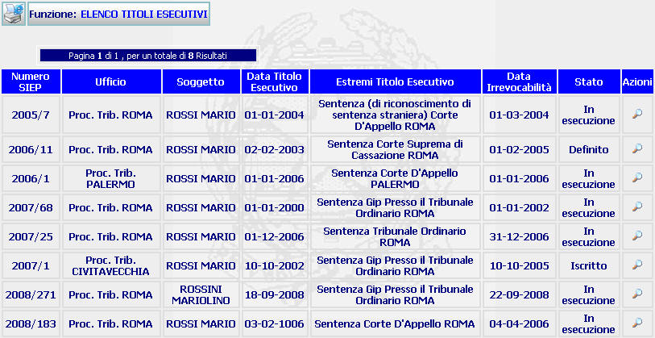

GENERALITA'
LISTA TITOLI ESECUTIVI: La funzione, consente di visualizzare la lista delle posizioni materiale presenti nel sistema e che soddisfano la ricerca effettuata con la funzione Ricerca titolo esecutivo per soggetto / Ricerca titolo esecutivo per numero Siep.
LE MASCHERE VIDEO
La funzione in esame viene realizzata attraverso l'utilizzo della seguente maschera che riporta gli elementi descrittivi e operativi dei titoli esecutivi:

ATTENZIONE: se c'è un solo elemento da visualizzare anziché questa maschera viene visualizzata la maschera del Dettaglio Procedimento.
COME FARE PER ...
| Per visualizzare i dati di un titolo esecutivo, l'utente deve: |
Cliccare sul pulsante
; si aprirà la maschera di Dettaglio Procedimento che permette di visualizzare i dati di un titolo esecutivo.
| Per visualizzare,se presente, un'altra pagina occorre:
|

CAMPI
Nella maschera non sono presenti campi digitabili.
PULSANTI
Oltre al pulsante
 ,
che fa parte del gruppo di
pulsanti di "Uso Comune"
è presente il seguente pulsante:
,
che fa parte del gruppo di
pulsanti di "Uso Comune"
è presente il seguente pulsante:
|
PULSANTE |
DESCRIZIONE |
|
|
Questo pulsante ha lo scopo di visualizzare i dati di Dettaglio Procedimento. |